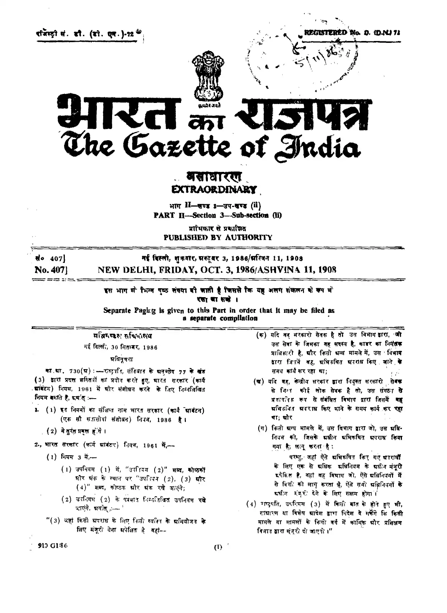
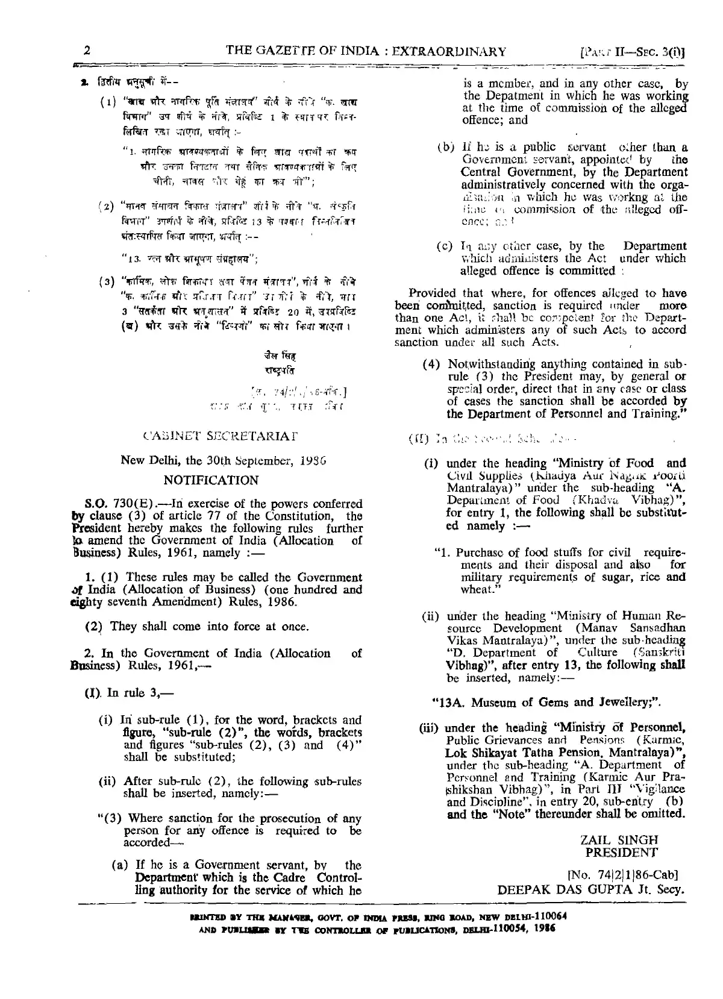

Amendment #187 (S.O. 730(E), 1986)
5 changes: 0 to the First Schedule, 3 to the Second Schedule, 2 to the rules of the Order or not placed. 5 applied
The order, page by page
Page 1 of 2

Page 2 of 2

12345rule 3 › sub rule 1
for “sub-rule (2)” read “sub-rules (2), (3) and (4)”
applied at order › rule 3 › sub_rule 1 in the Rules after #187
after rule 3 › sub rule 2
- (3) Where sanction for the prosecution of any person for any offence is required to be accorded-
- a. If he is a Government servant, by the Department which is the Cadre Controlling authority for the service of which he is a member, and in any other case, by the Depatment in which he was working at the time of commission of the alleged offence; and
- b. If he is a public servant other than a Government servant, appointed by the Central Government, by the Department administratively concerned with the orgaisation in which he was working at the Hac commission of the alleged offence; a
- c. In any other case, by the Department which administers the Act under which alleged offence is committed:
- Provided that where, for offences alleged to have been committed, sanction is required under more than one Act, it shall be compelent for the Department which administers any of such Acts to accord sanction under all such Acts. (4) Notwithstanding anything contained in subrule (3) the President…
applied at order › rule 3 › sub_rule a in the Rules after #187
read page break
Schedule 2 › Ministry of Food and Civil Supplies › Department of Food › entry 1
- 1. Purchase of food stuffs for civil requirements and their disposal and also for military requirements of sugar, rice and wheat.
applied at schedule 2 › ministry MINISTRY OF FOOD AND CIVIL SUPPLIES (KHADYA AUR NAGRIK POORTI MANTRA- LAYA) › department A ›… in the Rules after #187
after Schedule 2 › Ministry of Human Re- source Development › Department of Culture › entry 13
- 13A. Museum of Gems and Jewellery
applied at schedule 2 › ministry MINISTRY OF HUMAN RESOURCE DEVELOP- MENT › department D › entry 13A in the Rules after #187
Schedule 2 › Ministry of Personnel, Public Grievances and Pensions › Department of Personnel and Training › III "Vigilance and Discipline" › entry 20 › item b
applied at schedule 2 › ministry Ministry of Personnel Public Grievances and Pen sions (Karmik, lok Shikayat tatha Pension… in the Rules after #187
How this document was read
From the Government of India (Allocation of Business) Rules, 1961 and their amendments, as published by the Cabinet Secretariat (cabsec.gov.in), read by orgpedia. The readings of the older scanned gazettes have known gaps.